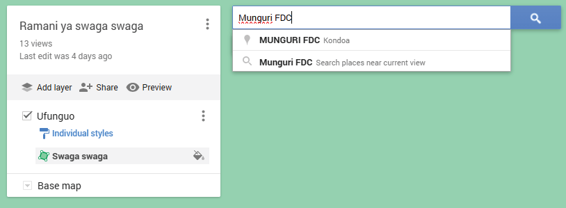

Apart from determining the distance of a straight and a curved object using traditional methods, we can also determine distances on a map using digital methods.The following steps explain how to use “Google My Maps” software to measure distance.
(a) On your computer or smartphone, open the Google browser, search for “Google My Maps”, and click on My Maps as shown in Figure 21.
Figure 21: Opening Google My Map software
(b) After Google My Maps is opened, search for the area where you are going to measure the distance between two points.For example, we are going to search for Munguri FDC as shown in Figure 22 to measure the distance between Munguri FDC and Munguri Primary School.

Figure 22: Search for the area where you want to measure a distance
(c) Once Munguri FDC is shown on Google My Maps, zoom out by moving the mouse wheel backwards to view Munguri FDC and Munguri Primary School as shown in Figure 23.This will